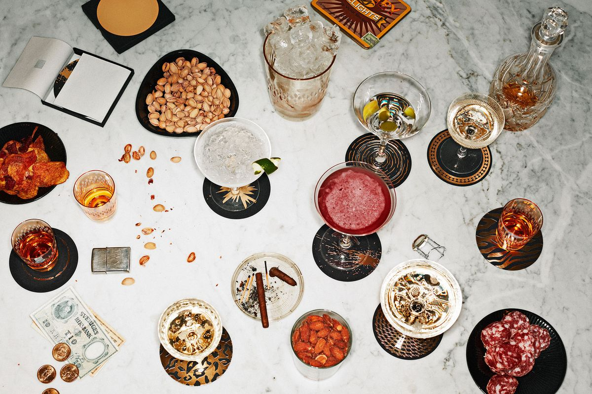

· PREBODA: UBICACIÓN & HORARIOS ·
¡Brutal que quieras pasar también este día con nosotros! La preboda se celebrará el 4 de Julio de 2025. Pronto tendremos mas información.
MONASTERIO DE ARMENTEIRA

La Eucaristía tendrá lugar a las xx:xx en el Monasterio de Santa María de Armenteira.
Lugar de la Iglesia, s/n, 36192 A Armenteira, Pontevedra